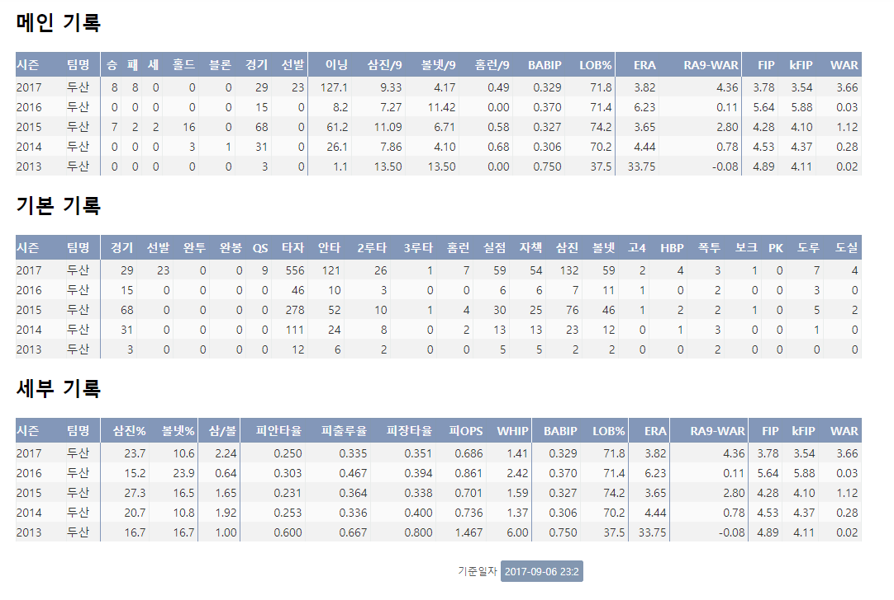

Baseball
야구(野球, baseball)는 아홉 또는 열 명으로 구성된 두 팀이 방망이와 공을 사용해 겨루는 구기 종목입니다..
 저는 많은 운동 중에서 특히 야구를 좋아하는데, 야구를 보는 것과 직접 야구를 하는 것 모두 좋아합니다
개인적으로 야구에는 다양한 매력이 있다고 생각합니다.
저는 많은 운동 중에서 특히 야구를 좋아하는데, 야구를 보는 것과 직접 야구를 하는 것 모두 좋아합니다
개인적으로 야구에는 다양한 매력이 있다고 생각합니다.그 중에서 몇 가지를 소개하자면, 야구는 극적인 상황이 많이 연출됩니다. 시간 제한이 없는 스포츠라서 경기가 질 것 같아도 열심히 하면 이길 수도 있으며, 반대로 이기고 있다고 해도 방심하면 금방 역전당하는 스포츠입니다. 그래서 야구는 끝까지 알 수 없는 스포츠입니다. 그래서 메이저리그의 전설적인 야구선수인 요기 베라는 '끝날 때까지 끝난 것이 아니다'라는 너무 유명한 명언을 남긴 바 있습니다.
또한 야구는 다양한 특징을 가진 선수들을 보는 재미가 있습니다. 공을 빠르게 던지지 못한다고 해도 변화구를 무기로 타자들과 상대하는 투수도 있고, 발이 느리더라도 정교한 타격과 강한 힘으로 홈런을 만들어내는 타자도 있습니다. 다양한 선수들이 있기에 다양한 작전이 나올 수 있고, 이러한 작전들은 경기를 더 재미있게 바꿉니다.
 야구를 기록의 스포츠라고도 많이 부르는데, 야구에서는 많은 기록들이 존재해서 그러한 별명이 붙었습니다. 야구는 다른 스포츠들에 비교해봐도 상당히 많은 기록 지표들이 있습니다. 왼쪽의 사진은 어떤 한 투수의 기록인데, 상당히 많은 기록 지표들이 존재함을 알 수 있습니다. 이를 토대로 수학적/통계적으로 야구를 분석해 선수들의 성향을 파악하고 더 좋은 결정을 결정하게끔 해주는 '세이버메트릭스'라는 것이 발전 할 수 있는 기반이 되었습니다. statiz(http://www.statiz.co.kr)라는 홈페이지에서는 선수의 타격 하나 하나마다 그 선수의 팀의 승률이 얼마나 올랐고 떨어졌는지 알 수 있습니다. 이러한 기록들을 살펴보는 재미도 있습니다.
개인적으로, 야구를 너무 좋아합니다. 그래서 한때 김포시 중학생 시대표팀에 들어가서 활동하기도 했고, 요즘에는 시간이 없어서 그러지는 못하지만 야구장에도 종종 가서 제가 좋아하는 야구팀을 응원해본적도 있습니다. 운동을 좋아하지 않는 저로서는 제가 야구를 좋아하는 것이 아이러니하기도 합니다만, 야구같은 스포츠를 좋아하는 것에 대해서 자부심? 비슷한 것도 많이 있습니다.